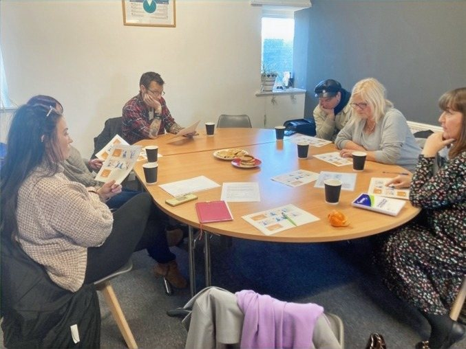

News · February 2024
“This is what people-centred care looks like”: reflecting with community partners and NHS Grampian Health Improvement

On 2nd February 2024, we held a collective reflection and evaluation of the demonstration study process with community partners and colleagues from NHS Grampian.
Wendy Innocent, Health Improvement Manager from NHS Grampian, showcased new media campaigns incorporating the community intelligence organised and arranged through the process, and received feedback from community partners.
Feedback was positive. Community partners reported that feeling heard in supportive community-led spaces was a worthwhile experience, and that engaging with practitioners from NHS Grampian felt authentic, real and ‘what people-centred care looks like’.
Community partners were highly encouraging and glad to see their perspectives on inclusive and incentivised health promotion and smoking cessation marketing campaigns were heard and included in the new campaigns.
We also discussed what we can do moving forward — further research focusing on mental health and addiction were identified as key areas from community partners’ perspectives for further study.
All news